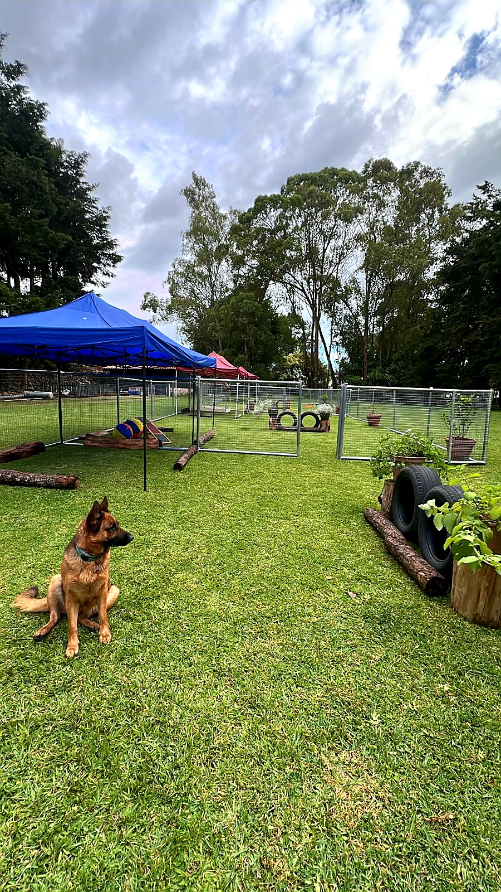

El estándar más alto en cuidado canino en Guatemala
Todos nuestros servicios de grooming incluyen Day Pass gratis
Más que un hotel para perros, en Casa Canis Dog Hotel & Resort, creemos que cada mascota merece mucho más que un lugar donde quedarse. Creamos un espacio diseñado para brindar seguridad, comodidad, bienestar y atención personalizada, ofreciendo una experiencia de hospedaje donde cada huésped es tratado como parte de nuestra familia.
Nuestro compromiso es proporcionar tranquilidad tanto a las mascotas como a sus propietarios mediante instalaciones modernas, protocolos profesionales, supervisión constante y un servicio basado en los más altos estándares de bienestar animal.
Ya sea para hospedaje, Day Pass o grooming, cada detalle ha sido cuidadosamente diseñado para que su mascota disfrute de una estancia segura, divertida y libre de estrés.

En Casa Canis no solo cuidamos mascotas; construimos experiencias de confianza. Nos enorgullece ofrecer:
Creemos que el bienestar también depende del entorno. Por eso nuestros huéspedes disfrutan de amplias áreas verdes donde pueden correr libremente, caminar sobre césped natural, explorar diferentes aromas, interactuar con un ambiente cambiante y disfrutar del aire fresco y la luz del sol. Todo esto proporciona un nivel de estimulación física y mental que favorece una estancia más activa, relajada y enriquecedora.
Nos permite responder de forma inmediata ante cualquier situación médica o emergencia que pueda presentarse durante la estancia, minimizando riesgos y brindando tranquilidad a los propietarios. Además, contamos con la experiencia para atender mascotas que requieren administración de medicamentos, tratamientos médicos, cuidados especiales, monitoreo clínico, hembras en celo y otras necesidades particulares.
Nos adaptamos a la rutina, alimentación y necesidades individuales de cada mascota.
Nuestra dirección veterinaria ha permitido establecer estándares superiores de bioseguridad, higiene y control sanitario. Cada procedimiento ha sido diseñado para reducir riesgos, prevenir enfermedades y mantener un ambiente seguro y saludable para todas las mascotas que nos visitan.
Cada integrante de Casa Canis ha sido seleccionado y capacitado para brindar una atención basada en profesionalismo, responsabilidad y respeto por cada mascota. Nuestro compromiso con la capacitación continua nos permite ofrecer un servicio consistente, seguro y de la más alta calidad.
Creemos que la confianza se construye con hechos. Por ello, ofrecemos visitas guiadas programadas para que los propietarios conozcan nuestras instalaciones, protocolos, áreas de recreación y la forma en que cuidamos de cada huésped.
Horarios de Atención
Con el objetivo de brindar una atención organizada y dedicar el tiempo necesario a cada uno de nuestros huéspedes, manejamos los siguientes horarios de servicio:
En Casa Canis entendemos que el grooming es mucho más que la apariencia; es una parte fundamental de la salud y el bienestar de cada mascota. Nuestro equipo cuenta con amplia experiencia y dedica el tiempo necesario para brindar un servicio de calidad, adaptándose a las características de cada raza, tipo de pelaje y a las preferencias específicas de cada propietario. Trabajamos con productos de alta calidad y, cuando la condición de la piel o el pelaje lo requiere, ofrecemos baños terapéuticos y tratamientos dermatológicos respaldados por un médico veterinario. Durante cada sesión realizamos una evaluación detallada de la mascota, lo que nos permite identificar oportunamente anomalías como lesiones cutáneas, masas, parásitos, infecciones de oído, alteraciones en uñas, problemas dermatológicos u otras condiciones que frecuentemente pasan desapercibidas. Cuando detectamos alguna anomalía, informamos inmediatamente al propietario y recomendamos las alternativas de diagnóstico o tratamiento más adecuadas.
Cuidado extendido: Hasta 6:30 p.m. con previa notificación (+Q75.00)
Si desea que su mascota disfrute de nuestras áreas verdes y Day Pass mientras espera su turno, puede agregarlo a su reserva.
✓ Baños terapéuticos y tratamientos dermatológicos
✓ Productos de alta calidad
✓ Evaluación detallada de salud cutánea
✓ Respaldo de Médico Veterinario
En Casa Canis cada estancia ha sido diseñada para ofrecer mucho más que un lugar donde dormir. Nuestros huéspedes disfrutan de un ambiente seguro, limpio y enriquecido, con amplias áreas verdes, espacios para el ejercicio, recreación supervisada y períodos adecuados de descanso. Cada mascota recibe atención personalizada de acuerdo con su edad, temperamento, nivel de actividad y necesidades particulares. Nuestro equipo realiza un monitoreo constante del comportamiento, apetito, hidratación y estado general de cada huésped, contando además con respaldo médico veterinario para atender mascotas que requieren administración de medicamentos, tratamientos, cuidados especiales o una respuesta profesional inmediata ante cualquier eventualidad.
Ingresos/salidas fuera de horario con autorización previa. Cargo adicional: Q75.00
✓ Atención personalizada 24/7
✓ Monitoreo constante de comportamiento y apetito
✓ Respaldo médico veterinario inmediato
✓ Adaptado a necesidades individuales
Nuestro servicio de Day Pass está diseñado para perros que necesitan mantenerse activos mientras sus propietarios trabajan, viajan o cumplen otros compromisos. Durante su estancia, los huéspedes disfrutan de amplias áreas verdes, contacto con la naturaleza, ejercicio supervisado, enriquecimiento ambiental y oportunidades de socialización de acuerdo con su temperamento y compatibilidad con otros perros. El objetivo del Day Pass no es únicamente cuidar a su mascota durante algunas horas, sino ofrecerle un ambiente donde pueda ejercitarse, explorar, jugar, descansar y regresar a casa física y mentalmente más satisfecha.
Lunes a Domingo | Horarios flexibles según tus necesidades
Es obligatorio enviar el carnet de vacunación vigente antes de la visita para confirmar el ingreso.
✓ Contacto con naturaleza
✓ Enriquecimiento ambiental
✓ Socialización controlada
✓ Monitoreo constante de bienestar
Entrenamiento profesional para que tu mejor amigo aprenda, se comporte mejor y fortalezca su vínculo contigo, con un enfoque adaptado a las necesidades de cada mascota.
✓ Entrenamiento profesional personalizado
✓ Disponible en las instalaciones o a domicilio
✓ Fortalece la relación con tu mascota
Ofrecemos servicios de fisioterapia y rehabilitación dirigidos por un médico veterinario con formación especializada en medicina física y rehabilitación. Cada paciente es evaluado de forma individual para desarrollar un plan terapéutico adaptado a su condición clínica, edad, nivel de actividad y objetivos de recuperación. La fisioterapia puede desempeñar un papel fundamental en la recuperación después de cirugías o lesiones, el manejo del dolor, el tratamiento de enfermedades ortopédicas y neurológicas, y el mantenimiento de la movilidad en pacientes geriátricos o con enfermedades crónicas.
En Casa Canis no operamos como una clínica veterinaria abierta al público. Nuestros servicios médico-veterinarios constituyen un beneficio exclusivo para las mascotas hospedadas o inscritas en alguno de nuestros servicios, lo que nos permite brindar atención profesional de manera rápida y oportuna sin necesidad de trasladar a la mascota a una clínica externa. Todos los procedimientos médicos, vacunaciones y desparasitaciones son documentados y registrados por un Médico Veterinario con colegiado activo, asegurando que el carnet sanitario de su mascota quede firmado y sellado conforme a los requisitos correspondientes.
Celebra momentos especiales en un espacio diseñado para que las mascotas y sus familias disfruten con total tranquilidad. Ofrecemos eventos completamente privados para grupos de 15 a 30 personas, con acceso exclusivo a nuestras amplias áreas verdes y una cómoda pérgola para tus invitados. Cada reservación incluye 4 horas de uso exclusivo de las instalaciones, y puedes personalizar tu evento contratando servicios adicionales como catering, decoración, fotografía y actividades recreativas.
Muy pronto tendremos promociones especiales para nuestros huéspedes. Escríbenos por WhatsApp y te avisamos apenas estén disponibles.
Consultar PromocionesCompleta el formulario y nos pondremos en contacto por WhatsApp para confirmar tu reserva